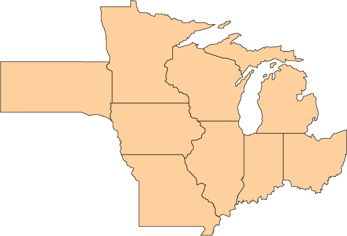

Farmers & Industry (Obj. 5)
Obj. 5 - Promote extension, outreach and stakeholder learning and participation across all aspects of the program.

Farmers attending a field meeting in Iowa.
Overview
The project's extension directive promotes participatory exchange of climate and agricultural knowledge among farmers, extension educators and the project team.
An expansive network of established and newly initiated farmer groups serves as the structure for evaluating the crop management practices being tested across the CSCAP field research sites. Extension professionals in Objective 5 are experienced in testing new technologies, strategies and group techniques to encourage farmer learning and implementation of appropriate adaptive management approaches.
Research Questions
A full list of research questions for the CSCAP extension activities can be found here.
Farmer Resources
Click here for project videos discussing farmer perspectives on climate change.
External video: Advisory Board member Richard Sloan explains conservation practices he uses on his farm near Rowley, Iowa.
Obj. 5 Scientists & Staff
Click here for more information about scientists and staff involved extension and outreach to farmers and industry.
Click on a state below for Extension Educators.
2011 Annual Conference Posters
Click here to view posters from the 2011 CSCAP Annual Conference detailing work underway for each objective.